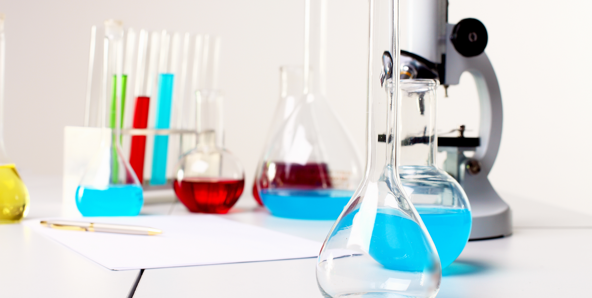

Zeus consultores fue creada con el propósito de brindar a los laboratorios de ensayo, de aguas, de
alimentos, clínicos y de calibración todas las herramientas necesarias para poder mejorar su
condición competitiva, optimizar la calidad de sus procesos y productos y acreditarse frente al
Organismos de Acreditación en Colombia –ONAC e Instituto de Hidrología, Meteorología y
Estudios Ambientales - IDEAM; demostrando la competencia técnica que le permita ofrecer y
atender con mayor efectividad sus servicios.
¿Que Hacemos?

Zeus consultores realiza consultorías y asesoría técnica en diferentes temas relacionados con laboratorios:
•Aseguramiento de calidad de resultados, manejo y análisis de técnicas estadísticas.
•Aseguramiento metrológico basado en 10012, revisión de los aspectos técnicos metrológicos
asociados a los métodos de medición.
•Asesorías en ensayos de aptitud y análisis de resultados.
•Implementación sistemas de gestión ISO/IEC 17025 para laboratorios de ensayo y calibración,
NTC-ISO 15189 para laboratorios clínicos.
• Fortalecimiento de competencia técnica del personal de los laboratorios con capacitaciones en
temas específicos acorde a sus necesidades.
• Implementación del Sistema de aseguramiento de calidad de las mediciones.
• Evaluación de métodos de ensayo, Soporte en confirmación de métodos, Incertidumbre de las
mediciones.
• Análisis físicoquímicos y microbiológicos de aguas.
• Auditorías Internas de calidad y técnicas bajo la normatividad aplicable.
Nuestra Experiencia
Zeus consultores cuenta con la experiencia y entrenamiento en Institutos de Metrología
Nacionales e Internacionales.
·Experiencia en auditorías internas y externas con organismos certificadores y acreditadores a
nivel Nacional.
·Consultoría en acreditación del laboratorio de Aguas de Buga S.A. E.S.P.
·Auditoría interna como experto técnico en Aguas Capital de Cúcuta S.A. E.S.P.
·Implementación del SGC 17025:2005 y responsable técnico del laboratorio de metrología del
SENA Caldas.
·Implementación de sistemas de aseguramiento metrológico.
·Planeación, coordinación y ejecución de análisis fisicoquímico y microbiológico de aguas. Director
técnico de laboratorio en Aguas de Manizales.
Beneficios de los servicios soportados
•Identificar las necesidades de los laboratorios y fortalecer aquellos aspectos que afecten
directamente el logro de la acreditación.
•Brindar soluciones específicas a problemas internos del laboratorio mediante metodologías de
trabajo prácticas y orientadas a resultados.
•Mejorar la competencia técnica del personal del laboratorio con las capacitaciones y
transferencia de conocimientos.
•Apoyar en la implementación de la estructura del sistema de gestión del laboratorio y le permita
alcanzar la acreditación frente al organismo acreditdor.
•Experiencia de los consultores en temas específicos de laboratorios, la cual le ayuda a alcanzar
mayor competitividad dentro de la industria o sector en donde se desenvuelve.
•Disminuir costos operativos por contratación directa.
Ventajas de Utilizar Nuestros Servicios
•Cumplimiento con honradez, responsabilidad y confidencialidad a las necesidades de los clientes.
•Manejo de una excelente imagen profesional.
•Apoyo de un equipo interdisciplinario especializado en diferentes áreas de laboratorios.
•Apoyo a los laboratorios con conocimientos para que mejoren su rentabilidad y competencia.
•Garantía en la mejora de los procesos de los laboratorios.
•Paquete de servicios adecuados a sus necesidades.
•Acompañamiento y asesoría permanente durante el proceso.